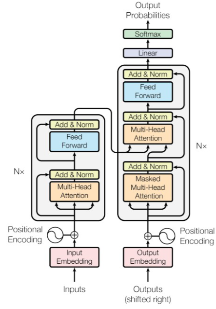

Motywacja
- Problem przetwarzania sekwencji na sekwencję
- \(y_t = f(x_1, \ldots, x_T, y_1 \ldots,
y_{t-1})\)
- Stan sieci - wektor o stałym wymiarze
- Przełomowa praca w 2017
- State-of-the-art dla tłumaczenia maszynowego
- Nie ma tam rekurencji
- Działa atencja

Transformer diagram
Architektura
- Dwie części
- Na wyjściu wektor długości słownika
- Wygenerowanie tokenu, doklejenie do sekwencji wyjściowej, ponowne
uruchomienie modelu
- aż do momentu gdy model wygeneruje token End of sequence
- Można tłumaczyć sekwencję wejściową dowolnej długości na sekwencję
wyjściową dowolnej długości
- Do enkodera podaje się cały tekst
- np. jak tłumaczymy z polskiego na angielski to podajemy tekst po
polsku
- Do dekodera wchodzi stan enkodera i sekwencja wyjściowa do tej pory
- na początku tylko token Beginning Of Sentence
- potem po wygenerowaniu każdego kolejnego dokleja się do BOS i
przewiduje następny
Atencja
- \(m\) par klucz wartość o wymiarach
\(d_K, d_V\)
- \(n\) zapytań o wymiarach \(d_K\)
- \(Attention(Q,K,V) = softmax^{(w)}(QK^T /
\sqrt{d_K}) V\)
- dzielenie przez \(\sqrt{d_K}\) -
normalizacja
- \(softmax\) liczony dla
wierszy
- Wiele głów atencji - wyniki są konkatenowane i przemnożone przez
macierz \(W^O\) (output)
Kodowanie pozycyjne
- Cała sekwencja wejściowa jest przetwarzana jednocześnie
- Gubi się informacja o pozycji tokenu
- Do zagnieżdżeń wejściowych dodaje się wektory zawierające informacje
o ich pozycjach
- Funkcje \(\sin\) i \(\cos\)
- Ten sam token ale na różnych pozycjach w sekwencji dostanie różne
zagnieżdżenia
Maskowanie
- Nie chcemy żeby zagnieżdżenie na pozycji \(pos\) wynikało z zagnieżdżeń dla
późniejszych pozycji
- Przed wyliczeniem \(softmax\) robi
się maskowanie \(QK^T\)
- powyżej diagonali ustawia się \(-\infty\)
- po przeliczeniu \(softmax\) wyjdzie
\(0\) w tych komórkach
Feed Forward
- Wyjście z bloku atencji trafia do zwykłego perceptrona
wielowarstwowego
Normalizacja
- Wyjścia z bloku atencji i z MLP
- Normalizacja pakietowa
- średnia \(0\)
- odchylenie \(1\)
Linear & Softmax
- Na ostatnim (prawym) zagnieżdżeniu wyjściowym
- Softmax daje rozkład prawdopodobieństwa słów w słowniku
- można wybrać np. najbardziej prawdopodobne
- różne strategie próbkowania
- Alternatywa - Teacher Forcing
- do wejścia dekodera jest dopisywane żądane słowo wyjściowe
- Transformery uczą się szybciej niż sieci rekurencyjne
- i tak wymagają ogromnych zasobów do nauczenia
- Nie ma stanu sieci, który musi pamiętać wszystko
- adekwatnie długa reprezentacja zdania wejściowego
- Mniej warstw do propagowania gradientu, krótkie linie
- dzięki temu szybkie uczenie
- Złożoność obliczeniowa \(O(T^2 +
T'^2)\)
- długości sekwencji wejściowej i wyjściowej
Inne zastosowania
- Tam gdzie interesuje nas \(P(x_t |
x_{t-1}, \ldots, x_1)\)
- Przekształcenie jednej sekwencji w drugą
- tłumaczenie maszynowe
- klasyfikacja tekstu
- streszczenia
- odpowiadanie na pytania
GPT
- Generative Pretrained Transformer
- Nie ma podziału na enkoder i dekoder
- Po przejściu przez sieć doklejamy wyjście do zapytania i
przepuszczamy jeszcze raz